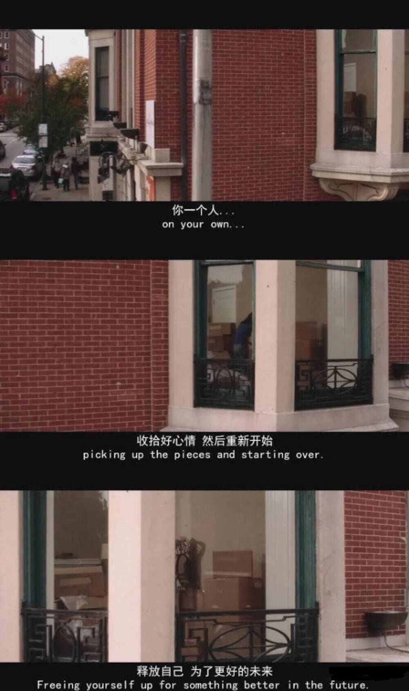

有辆列车在你面前。
列车员问你小伙子你要上车么？
你就问这车去哪，下一站什么时候到，车上还有座位么。
火车早就开走了。你只能等下一辆。
可是下一辆来了，你面临同样的问题，等了很久别人都到西伯利亚了,你还在车站。
管他呢！上去啊！火车是朝前开的，去哪不重要，重要的是窗外的风景。
等到你下车了，你就会感谢我的。
因为就算有架飞机在你面前，你也会二话不说上去的，因为你嫌火车太慢了。
你想要的一起正在一步步向你走来
当你背单词时，阿拉斯加的鳕鱼正跃出水面。
当你解微分方程时，大洋彼岸的海鸥正拂过费城。
当你晚自习时，极图的夜空散满了五彩斑斓。
当你为自己的未来踏踏实实努力时，那些你从未见过的风景，
那些你以为不会遇到的人，你想要的一切，正一步步向你走来。
带你去个地方
沉不下心看书，浮跋和焦虑，
都是因为年纪渐长，不信正道而太重功利导致的。
真正坚持到最后的人靠的不是激情，
而是恰到好处的喜欢和投入。

返回顶部
版权所有yuegeda ©yuegeda (京)-公开性-2020-0020 京公网安备11000002000001号 京ICP证030173号